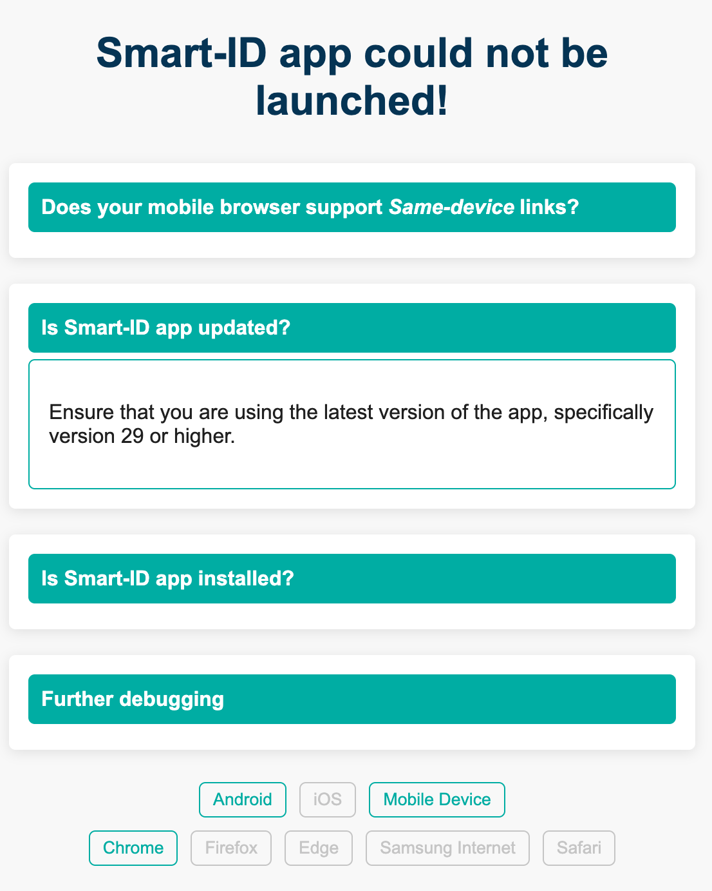

Frequently Asked Questions
- When do I need to be ready with my integration?
-
Smart-ID RP API v1/v2 will remain working as is. Still we encourage you to start your developments to implement new end-user friendly and more secure usage flows.
- Do new flows work with all Smart-ID app versions?
-
No. For end-user to be able to use new flows app must be updated to at least version 29. User may see the following error messages when using old Smart-ID app with new flows:

Same-device flows - fallback page
|

Cross-device flow - Invalid QR code
|
- Where should I start to integrate Smart-ID to my e-service?
-
In case you are using Java development framework, the easiest way to do the integration is to use our "free to use" client libraries. When you are using some other development framework, please read our API description. The Smart-ID integration API is based on JSON/REST and it’s easy to use from all the major nowadays development frameworks. For development purposes we have a publicly available demo environment, you don’t need any agreement for implementing Smart-ID support. For accessing the production service you should have an agreement. More information about service agreements and prices is available here.
- How long does it usually take to implement Smart-ID support?
-
We have got feedback from developers and e-service providers that implementing Smart-ID authentication is easy and usually it takes one to two days. The signing process is more complicated and the amount of development work needed depends on your current implementation. In case there is document signing based on ID-card already in place, adding the Smart-ID support should take up to one week.
- Is there a possibility to get support during Smart-ID integration?
-
Yes, we are happy to provide you free support for integrating the Smart-ID. Please contact us via support@sk.ee.
- What are the “ServiceName” and “RPUUID” parameters and what kind of values should I use there?
-
These are unique identifiers of the e-service provider. The e-service provider name is displayed to the end-user in Smart-ID app during authentication and signing. The service provider should inform SK of the ServiceName that will be used. The RPUUID is service internal parameter that is provided by SK to the e-service provider. Both parameters are fixed in agreement between e-service provider and SK ID Solutions.
- What are the options for implementing automated tests for the Smart-ID integration?
-
For making automated integration testing easier there are Smart-ID auto-responder test accounts here. These accounts are returning pre-defined status codes and responses according to specifications. This means that you don’t have to automate Smart-ID app side during the testing, this is already done by SK.
- Is the app-2-app integration available?
-
Yes. See more.
- What information contains the Smart-ID certificate?
-
Detailed info is at document Certificate and OCSP Profile for Smart-ID available at https://www.sk.ee/en/repository/profiles/
- Where can I find users personal code?
-
User’s personal code can be found from certificate’s attribute SERIALNUMBER. This attribute can contain personal number, a national identity card number or passport number.
|
NB!
Please do not use personal code from certificate’s Common Name (CN) field. Newer certificates contain only surName (SN) and givenName (G) in CN field. |
- Where can I find users date of birth?
-
Birth of date is encoded into personal identity code. Latvian new personal identity code format is exception thow. Special birth of date field will be added to Smart-ID certificates in stages and only for QUALIFIED accounts. For convinience smart-id-java-client and smart-id-php-client have special function getDateOfBirth and getDateOfBirth for that. For getting that info directly from certificate see getDateOfBirthCertificateAttribute and getDateOfBirthFromCertificateField